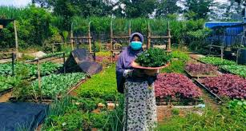

Smart Farming, Smart Future
Solusi terpadu untuk pertanian modern Indonesia
Nama : Pak Rayan
Asal daerah : Sukohardjo
Jenis pertanian : Padi
Nama : Pak Andika
Asal daerah : Malang
Jenis pertanian : Holticultural
Nama : Pak Maryanto
Asal daerah : Lampung Timur
Jenis pertanian : Jagung
Frequently Asked Questions (FAQ)
Apa itu AgriOne?
AgriOne adalah platform digital inovatif yang membantu petani Indonesia meningkatkan produktivitas melalui teknologi modern, analisis data, dan edukasi pertanian.
Siapa saja yang bisa menggunakan AgriOne?
Petani - untuk jual hasil panen dan konsultasi
Pembeli - untuk beli produk segar langsung dari petani
Investor - untuk investasi di proyek pertanian
Siapa saja - yang ingin belajar tentang pertanian
Produk apa saja yang bisa dijual di Marketplace?
Anda bisa menjual berbagai macam produk agrikultur, mulai dari hasil tani (padi, jagung, sayuran), bibit tanaman, hingga pupuk organik maupun anorganik.
Apakah produk di AgriOne organik?
Produk memiki keterangan masing-masing, apakah menggunakan pupuk kimia atau organik.
Bagaimana cara konsultasi dengan ahli pertanian?
Masuk ke fitur konsultasi, pilih opsi chat atau telepon, lalu pilih ahli sesuai bidangnya untuk langsung berdiskusi.
Apa Kata Mereka Tentang AgriOne?
Cerita nyata dari para pengguna yang telah merasakan manfaat platform kami.
"Sejak menggunakan Agrione, hasil panen saya meningkat 30%! Fitur konsultasi dengan ahli pertanian sangat membantu mengatasi masalah hama yang selama ini meresahkan. Dashboard yang mudah dipahami membuat saya bisa monitor kondisi lahan dengan lebih baik."
"Konten edukasi di Agrione sangat up-to-date. Magang virtual dan case study yang disediakan membantu saya memahami aplikasi teori ke praktik. Recommended untuk sesama mahasiswa pertanian!"
"Marketplace Agrione benar-benar game changer! Sekarang saya bisa langsung jual sayuran organik ke konsumen tanpa perantara. Keuntungan meningkat drastis dan pembeli lebih percaya dengan sertifikat organik yang ditampilkan."
"Akhirnya ada platform yang menghubungkan langsung dengan petani! Sayuran yang saya beli selalu fresh dan harganya lebih murah. Fitur tracking dari kebun sampai rumah membuat saya yakin dengan kualitasnya."
Visi
- Smart Farming: Transformasi sektor pertanian melalui teknologi digital, analitik data, dan automasi proses.
- Smart Future: Pertanian yang lebih efisien, berkelanjutan, dan berdaya saing global.
Kisah Sukses Petani Pengguna AgriOne
Ibu Sari, yang memiliki lahan sayuran organik seluas 2 hektar di Bandung, menggunakan fitur analisis cuaca AgriOne untuk mengoptimalkan jadwal tanam. Dengan prediksi cuaca yang akurat, ia dapat menghindari kerugian akibat hujan berlebihan dan kekeringan. Dalam 6 bulan pertama, produktivitas sayuran organiknya meningkat 40%, dan melalui platform edukasi AgriOne, ia mempelajari teknik pemupukan alami yang mengurangi biaya produksi hingga 25%. Kini, Ibu Sari telah menjadi supplier tetap untuk beberapa supermarket organik di Bandung dengan omzet bulanan yang meningkat 3 kali lipat.
Panduan Penggunaan
Cara Memulai:
1. Kunjungi https://agri-one-cyan.vercel.app/
2. Daftar dengan mengisi form registrasi
3. Verifikasi email
4. Lengkapi profile Anda
Dashboard
1. Status Tanaman: Berisi status tanaman berdasarkan waktu pertama kali menanam dan kondisi cuaca.
2. Estimasi Panen: Berisi estimasi hasil panen berdasarkan luas lahan, estimasi cuaca, dan waktu rawan hama.
3. Jadwal Kegiatan: Berisi jadwal kegiatan pertanian disertain alamarm pengingat kegiatan-kegiatan penting pada pertanian yang sedang dilakukan.
4. Analisis Harga: Berisi estimasi naik turunnya harga sayuran
5. Peringatan: Berisi peringatan cuaca buruk dan waktu rawan hama
6. Rekomendasi Waktu: Berisi rekomendasi waktu berupa tanggal untuk menanam tanaman
7. Rekomendasi Tanaman: Berisi rekomendasi tanaman yang baik ditanam berdasarkan cuaca
Marketplace
1. Tambahkan detail produk yang akan Anda jual
2. Unggah foto produk yang akan Anda jual pada kolom "add file"
Pembelian produk di market place
1. Untuk membeli produk, klik "beli sekarang"
2. Pilih metode dan ekspedisi untuk pengantaran produk yang Anda beli
3. Pilih metode pembayaran untuk produk yang Anda beli
Konsultasi
1. Anda dapat memilih konsultan pertanian untuk berkonsultasi
2. Klik chat atau telepon untuk mulai berkonsultasi
3. Durasi konsultasi untuk satu kali sesi adalah 30 menit
Edukasi
Pada navbar Edukasi Anda dapat menonton video edukasi Smart Farming dan Marketing Digital.
Investasi
1. Tersedia berbagai proyek pertanian yang sedang membutuhkan dana
2. Anda dapat memilih proyek untuk menginvestasikan dana Anda
3. Jika diperlukan, Anda dapat melakukan simulasi investasi terlebih dahulu
4. Anda juga dapat melihat portofolio investasi Anda selama berinvestasi di AgriOne
Didukung oleh:
Informasi Kontak
🌱 Smart Farm Dashboard
Status Tanaman
Padi: Fase berbunga
Jagung: Siap panen 5 hari
Estimasi Panen
Padi: 2.5 ton/ha
Jagung: 3.2 ton/ha
Jadwal Kegiatan Terdekat
- Tidak ada jadwal terdekat.
Analisa Harga
Beras: Rp 12.000/kg ↑
Jagung: Rp 5.500/kg ↓
Peringatan
Potensi cuaca buruk besok. Pastikan sistem drainase lahan Anda berfungsi dengan baik untuk menghindari genangan air.
Rekomendasi Waktu Tanam
Padi: Tanam 10 Juli - Panen 15 Oktober
Jagung: Tanam 20 Juli - Panen 25 Oktober
Analisis: Berdasarkan prakiraan cuaca saat ini (Suhu: 28°C, Curah Hujan: 5mm) dan prediksi 3 bulan ke depan, kondisi sangat ideal untuk tanaman umbi-umbian.
Rekomendasi Tanaman: Singkong, Ubi Jalar, dan Talas.
🛒 Marketplace Tani
Beras Premium
pupuk : organik
Beras berkualitas tinggi dari sawah organik
Jagung Manis
pupuk : Kimia
Jagung segar hasil panen hari ini
Bibit Tomat Unggul
Bibit tomat varietas unggul, tahan penyakit
Sayuran Organik
pupuk : Organik
Paket sayuran organik segar dan sehat
Mutiara Pupuk NPK 16-16-16
Kombinasi amonium dan nitrat membuat pertumbuhan bunga jadi seimbang
GDM Pupuk Organik Cair Spesial Tanaman Sayur 1L
Menyuburkan tanaman sayur anda hingga panen
🧠 Konsultasi
Ir. Andi Tani
Ahli Hama dan Penyakit Tanaman
💰 Harga: Rp50.000/sesi
🕒 Pengalaman: 10 tahun
⭐ Rating: ★★★★★
Dr. Siti Pertiwina
Spesialis Tanaman Hortikultura
💰 Harga: Rp30.000/sesi
🕒 Pengalaman: 5 tahun
⭐ Rating: ★★★★
🎓 Edukasi & Pelatihan
Smart Farming
Video dan artikel seputar teknologi pertanian modern.
Digital Marketing Tani
Panduan memasarkan hasil tani secara online.
🗓️ Kalender Kegiatan Pertanian
Juli 2025
Jadwal Hari Ini
Pilih tanggal untuk melihat jadwal.